|
4.3. Ложный DNS-сервер в сети Internet
Как известно, для обращения к хостам в сети Internet
используются 32-разрядные IP-адреса, уникально
идентифицирующие каждый сетевой компьютер в
этой глобальной сети. Однако, для пользователей
применение IP-адресов при обращении к хостам
является не слишком удобным и далеко не самым
наглядным.
В самом начале зарождения Internet для удобства
пользователей было принято решение присвоить
всем компьютерам в сети имена. Использование
имен позволяет пользователю лучше
ориентироваться в киберпространстве сети Internet -
куда проще, понятней и наглядней для
пользователя запомнить, например, имя www.ferrari.it,
чем четырехразрядную цепочку
IP-адреса. Использование в Internet мнемонически
понятных для пользователей имен породило
проблему преобразования имен в IP-адреса. Такое
преобразование необходимо, так как на сетевом
уровне адресация пакетов идет не по именам, а по
IP-адресам, следовательно, для непосредственной
адресации сообщений в Internet имена не годятся. На
этапе раннего развития Internet, когда в сеть было
объединено небольшое количество компьютеров, NIC
(Network Information Center) для решения проблемы
преобразования имен в адреса создал специальный
файл (hosts file), в который вносились имена и
соответствующие им IP-адреса всех хостов в сети.
Данный файл регулярно обновлялся и
распространялся по всей сети. Но, по мере
развития Internet, число объединенных в сеть хостов
увеличивалось, и данная схема становилась все
менее и менее работоспособной, поэтому была
создана новая система преобразования имен,
позволяющая пользователю в случае отсутствия у
него информации о соответствии имен и IP-адресов
получить необходимые сведения от ближайшего
информационно-поискового сервера (DNS-сервера).
Эта система получила название доменной системы
имен - DNS (Domain Name System).
Для реализации системы DNS был создан
специальный сетевой протокол DNS, для обеспечения
эффективной работы которого в сети создаются
специальные выделенные информационно-поисковые
серверы - DNS-серверы. Поясним основную задачу,
решаемую службой DNS. В современной сети Internet хост
при обращении к удаленному серверу обычно имеет
информацию только о его имени и не знает его
IP-адреса, который и необходим для
непосредственной адресации. Следовательно,
перед хостом возникает стандартная проблема
удаленного поиска: по имени удаленного хоста
найти его IP-адрес. Решением этой проблемы и
занимается служба DNS на базе протокола DNS.
Рассмотрим DNS-алгоритм удаленного поиска
IP-адреса по имени в сети Internet:
- хост посылает на IP-адрес ближайшего DNS-сервера
(он устанавливается при настройке сетевой ОС)
DNS-запрос, в котором указывает имя сервера,
IP-адрес которого необходимо найти;
- DNS-сервер, получив запрос, просматривает свою
базу имен на наличие в ней указанного в запросе
имени. В случае, если имя найдено, а,
следовательно, найден и соответствующий ему
IP-адрес, то на запросивший хост DNS-сервер
отправля-
ет DNS-ответ, в котором указывает искомый
IP-адрес. В случае, если указанное в запросе имя
DNS-сервер не обнаружил в своей базе имен, то
DNS-запрос отсылается DNS-сервером на один
из корневых DNS-серверов, адреса которых
содержатся в файле настроек DNS-сервера root.cache, и
описанная в этом пункте процедура повторяется,
пока имя не будет найдено (или не найдено).
Анализируя с точки зрения безопасности
уязвимость этой схемы удаленного поиска с
помощью протокола DNS, а также исходя из п. 3.2.3.2,
можно сделать вывод о возможности осуществления
в сети, использующей протокол DNS, типовой
удаленной атаки "Ложный объект РВС" .
Практические изыскания и критический анализ
безопасности службы DNS позволяют предложить три
возможных варианта удаленной атаки на эту
службу.
4.3.1. Внедрение в сеть Internet ложного DNS-сервера
путем перехвата DNS-запроса
В данном случае это удаленная атака на базе
стандартной типовой УА, связанной с ожиданием
поискового DNS-запроса. Перед тем, как рассмотреть
алгоритм атаки на службу DNS, необходимо обратить
внимание на следующие тонкости в работе этой
службы.
Во-первых, по умолчанию служба DNS функционирует
на базе протокола UDP (хотя возможно и
использование протокола TCP) что, естественно,
делает ее менее защищенной, так как протокол UDP в
отличие от TCP вообще не предусматривает средств
идентификации сообщений. Для того, чтобы перейти
от UDP к TCP, администратору DNS-сервера придется
очень серьезно изучить документацию (в
стандартной документации на домен named в ОС Linux нет
никакого упоминания о возможном выборе
протокола (UDP или TCP), на котором будет работать
DNS-сервер). Кроме того, этот переход несколько
замедлит систему, так как при использовании TCP
требуется создание виртуального соединения, и,
кроме того, конечная сетевая ОС вначале посылает
DNS-запрос с использованием протокола UDP. И только
в том случае, если ей придет специальный ответ от
DNS-сервера, сетевая ОС пошлет DNS-запрос с
использованием TCP.
Во-вторых, следующая тонкость, на которую
требуется обратить внимание, состоит в том, что
значение поля "порт отправителя" в UDP-пакете
вначале принимает значение ? 1023 и увеличивается с
каждым переданным DNS-запросом.
В-третьих, значение идентификатора (ID)
DNS-запроса ведет себя следующим образом. В случае
передачи DNS-запроса с хоста это значение зависит
от конкретного сетевого приложения,
вырабатывающего DNS-запрос. Эксперименты
показали, что в случае передачи запроса из
оболочки командного интерпретатора (SHELL)
операционных систем Linux и Windows '95 (например, ftp
nic.funet.fi) это значение всегда равняется единице. В
том случае, если DNS-запрос передается из Netscape
Navigator, то с каждым новым запросом сам броузер
увеличивает это значение на единицу.
В том случае, если запрос передается
непосредственно DNS-сервером, то сервер
увеличивает это значение идентификатора на
единицу с каждым вновь передаваемым запросом.
Все эти тонкости имеют значение в случае атаки
без перехвата DNS-запроса (п. 4.3.2 и 4.3.3).
Для реализации атаки путем перехвата DNS-запроса
атакующему необходимо перехватить DNS-запрос,
извлечь из него номер UDP-порта отправителя
запроса, двухбайтовое значение ID идентификатора
DNS-запроса и искомое имя и затем послать ложный
DNS-ответ на извлеченный из DNS-запроса UDP-порт, в
котором указать в качестве искомого IP-адреса
настоящий IP-адрес ложного DNS-сервера. Это
позволит в дальнейшем полностью перехватить
трафик между атакуемым хостом и сервером и
активно воздействовать на него по схеме
"Ложный объект РВС" (п. 3.2.3.3).
Рассмотрим обобщенную схему работы ложного
DNS-сервера (рис. 4.4):
- ожидание DNS-запроса;
- извлечение из полученного запроса необходимых
сведений и передача по сети на запросивший хост
ложного DNS-ответа, от имени (с IP-адреса) настоящего
DNS-сервера, в котором указывается IP-адрес ложного
DNS-сервера;
- в случае получения пакета от хоста, изменение в
IP-заголовке пакета его IP-адреса на IP-адрес
ложного DNS-сервера и передача пакета на сервер (то
есть ложный DNS-сервер ведет работу с сервером от
своего имени);
- в случае получения пакета от сервера, изменение
в IP-заголовке пакета его IP-адреса на IP-адрес
ложного DNS-сервера и передача пакета на хост (для
хоста ложный DNS-сервер и есть настоящий сервер).
Рис. 4.4. Функциональная схема ложного DNS-сервера.
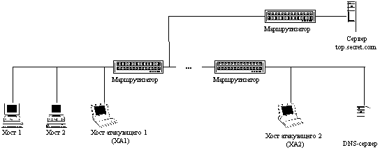
Рис. 4.4.1. Фаза ожидания атакующим DNS-запроса
(он находится на ХА1, либо на ХА2).
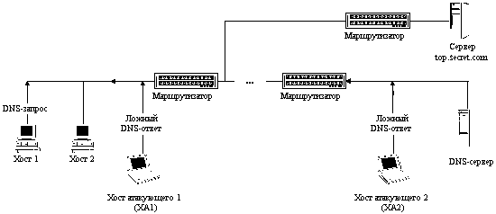
Рис. 4.4.2. Фаза передачи атакующим ложного DNS-ответа.
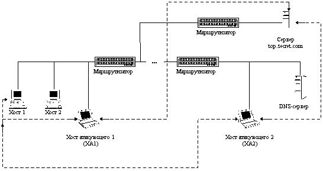
Рис. 4.4.3. Фаза приема, анализа, воздействия и передачи
перехваченной информации на ложном сервере.
Необходимым условием осуществления данного
варианта атаки является перехват DNS-запроса. Это
возможно только в том случае, если атакующий
находится либо на пути основного трафика, либо в
сегменте настоящего DNS-сервера. Выполнение
одного из этих условий местонахождения
атакующего в сети делает подобную удаленную
атаку трудно осуществимой на практике (попасть в
сегмент DNS-сервера и, тем более, в межсегментный
канал связи атакующему, скорее всего, не удастся).
Однако в случае выполнения этих условий возможно
осуществить межсегментную удаленную
атаку на сеть Internet.
Отметим, что практическая реализация данной
удаленной атаки выявила ряд интересных
особенностей в работе протокола FTP и в механизме
идентификации TCP-пакетов (подробнее см. п. 4.5). В
случае, когда FTP-клиент на хосте подключался к
удаленному FTP-серверу через ложный DNS-сервер,
оказывалось, что каждый раз после выдачи
пользователем прикладной команды FTP (например, ls,
get, put и т. д.) FTP-клиент вырабатывал команду PORT,
которая состояла в передаче на FTP-сервер в поле
данных TCP-пакета номера порта и IP-адреса
клиентского хоста (особый смысл в этих
действиях трудно найти - зачем каждый раз
передавать на FTP-сервер IP-адрес клиента)! Это
приводило к тому, что, если на ложном DNS-сервере не
изменить передаваемый IP-адрес в поле данных
TCP-пакета и передать этот пакет на FTP-сервер по
обыкновенной схеме, то следующий пакет будет
передан FTP-сервером на хост FTP-клиента, минуя
ложный DNS-сервер и, что самое интересное, этот
пакет будет воспринят как нормальный пакет (п. 4.5),
и, в дальнейшем, ложный DNS-сервер потеряет
контроль над трафиком между FTP-сервером и
FTP-клиентом! Это связано с тем, что обычный
FTP-сервер не предусматривает никакой
дополнительной идентификации FTP-клиента, а
перекладывает все проблемы идентификации
пакетов и соединения на более низкий уровень -
уровень TCP (транспортный).
4.3.2. Внедрение в сеть Internet ложного сервера
путем создания направленного "шторма"
ложных DNS-ответов на атакуемый хост
Другой вариант осуществления удаленной атаки,
направленной на службу DNS, основан на второй
разновидности типовой УА "Ложный объект
РВС" (при использовании недостатков
алгоритмов удаленного поиска - п. 3.2.3.2). В этом
случае атакующий осуществляет постоянную
передачу на атакуемый хост заранее
подготовленного ложного DNS-ответа от имени
настоящего DNS-сервера без приема DNS-запроса!
Другими словами, атакующий создает в сети Internet
направленный "шторм" ложных DNS-ответов. Это
возможно, так как обычно для передачи DNS-запроса
используется протокол UDP, в котором отсутствуют
средства идентификации пакетов. Единственными
критериями, предъявляемыми сетевой ОС хоста к
полученному от DNS-сервера ответу, является,
во-первых, совпадение IP-адреса отправителя
ответа с IP-адресом DNS-серве-ра; во-вторых, чтобы в
DNS-ответе было указано то же имя, что и в
DNS-запросе, в-третьих, DNS-ответ должен быть
направлен на тот же UDP-порт, с которого был послан
DNS-запрос (в данном случае это первая проблема для
атакующего), и, в-четвертых, в DNS-ответе поле
идентификатора запроса в заголовке DNS (ID) должно
содержать то же значение, что и в переданном
DNS-запросе (а это вторая проблема).
В данном случае, так как атакующий не имеет
возможности перехватить DNS-запрос, то основную
проблему для него представляет номер UDP-порта, с
которого был послан запрос. Однако, как было
отмечено ранее, номер порта отправителя
принимает ограниченный набор значений (>= 1023),
поэтому атакующему достаточно действовать
простым перебором, направляя ложные ответы на
соответствующий перечень портов. На первый
взгляд, второй проблемой может быть двухбайтовый
идентификатор DNS-запроса, но, как подчеркивалось
ранее, в данном случае он либо равен единице, либо
в случае DNS-запроса от Netscape Navigator (например) имеет
значение близкое к нулю (один запрос - ID
увеличивается на 1).
Рис. 4.5. Внедрение в Internet ложного сервера путем создания
направленного "шторма" ложных DNS-ответов на атакуемый хост.
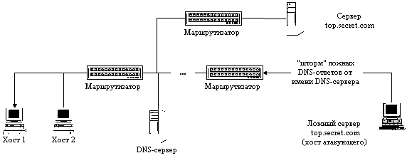
Рис. 4.5.1. Атакующий создает направленный "шторм"
ложных DNS-ответов на Хост 1.
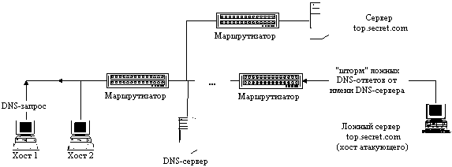
Рис. 4.5.2. Хост 1 посылает DNS-запрос
и немедленно получает ложный DNS-ответ.
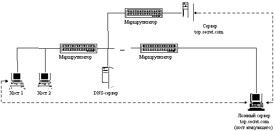
Рис. 4.5.3. Фаза приема, анализа, воздействия
и передачи перехваченной информации на ложном сервере.
Поэтому для осуществления данной удаленной
атаки атакующему необходимо выбрать
интересующий его хост (например, top.secret.com),
маршрут к которому требуется изменить так, чтобы
он проходил через ложный сервер - хост
атакующего. Это достигается постоянной
передачей (направленным "штормом" )
атакующим ложных DNS-ответов на атакуемый хост от
имени настоящего DNS-сервера на соответствующие
UDP-порты. В этих ложных DNS-ответах указывается в
качестве IP-адреса хоста top.secret.com IP-адрес
атакующего. Далее атака развивается по следующей
схеме. Как только цель атаки (атакуемый хост)
обратится по имени к хосту top.secret.com, то от
данного хоста в сеть будет передан DNS-запрос,
который атакующий никогда не получит, но этого
ему и не требуется, так как на хост сразу же
поступит постоянно передаваемый ложный DNS-ответ,
что и будет воспринят ОС атакуемого хоста как
настоящий ответ от DNS-сервера. Все! Атака
состоялась, и теперь атакуемый хост будет
передавать все пакеты, предназначенные для
top.secret.com, на IP-адрес хоста атакующего,
который, в свою очередь, будет переправлять их на
top.secret.com, воздействуя на перехваченную
информацию по схеме "Ложный объект РВС"
(п. 3.2.3.3).
Рассмотрим функциональную схему предложенной
удаленной атаки на службу DNS (рис. 4.5):
- постоянная передача атакующим ложных DNS-ответов
на атакуемый хост на различные UDP-порты и,
возможно, с различными ID, от имени
(с IP-адреса) настоящего DNS-сервера с указанием
имени интересующего хоста и его ложного IP-адреса,
которым будет являться IP-адрес ложного сервера -
хоста атакующего;
- в случае получения пакета от хоста, изменение в
IP-заголовке пакета его IP-адреса на IP-адрес
атакующего и передача пакета на сервер (то есть
ложный сервер ведет работу с сервером от своего
имени - со своего IP-адреса);
- в случае получения пакета от сервера, изменение
в IP-заголовке пакета его IP-адреса на IP-адрес
ложного сервера и передача пакета на хост (для
хоста ложный сервер и есть настоящий сервер).
Таким образом, реализация данной удаленной
атаки, использующей пробелы в безопасности
службы DNS, позволяет из любой точки сети Internet
нарушить маршрутизацию между двумя заданными
объектами (хос-тами)! Данная удаленная атака
осуществляется межсегментно по отношению к цели
атаки и угрожает безопасности любого хоста Internet,
использующего обычную службу DNS.
4.3.3. Внедрение в сеть Internet ложного сервера путем
перехвата DNS-запроса или создания направленного
"шторма" ложных DNS-ответов
на атакуемый DNS-сервер
Из рассмотренной в п. 4.3 схемы удаленного
DNS-поиска следует, что в том случае, если
указанное в запросе имя DNS-сервер не обнаружил в
своей базе имен, то запрос отсылается сервером на
один из корневых DNS-серверов, адреса которых
содержатся в файле настроек сервера root.cache.
Итак, в случае, если DNS-сервер не имеет сведений
о запрашиваемом хосте, то он сам, пересылая
запрос далее, является инициатором удаленного
DNS-поиска. Поэтому ничто не мешает атакующему,
действуя описанными в предыдущих пунктах
методами (п. 4.3.1- 4.3.2), перенести свой удар
непосредственно на DNS-сервер. В качестве цели
атаки теперь будет выступать не хост, а DNS-сервер
и ложные DNS-ответы будут направляться атакующим
от имени корневого DNS-сервера на атакуемый
DNS-сервер.
При этом важно учитывать следующую особенность
работы DNS-сервера. Для ускорения работы каждый
DNS-сервер кэширует в области памяти свою таблицу
соответствия имен и IP-адресов хостов. В том числе
в кэш заносится динамически изменяемая
информация об именах и IP-адресах хостов,
найденных в процессе функционирования
DNS-сервера, а именно, если DNS-сервер, получив
запрос, не находит у себя в кэш-таблице
соответствующей записи, он пересылает ответ на
следующий сервер и, получив ответ, заносит
найденные сведения в кэш-таблицу в память. Таким
образом, при получении следующего запроса
DNS-серверу уже не требуется вести удаленный
поиск, так как необходимые сведения уже
находятся у него в кэш-таблице.
Из анализа только что подробно описанной схемы
удаленного DNS-поиска становится очевидно, что в
том случае, если в ответ на запрос от DNS-сервера
атакующий направит ложный DNS-ответ (или в случае
"шторма" ложных ответов будет вести их
постоянную передачу), то в кэш-таблице сервера
появится соответствующая запись с ложными
сведениями и в дальнейшем все хосты,
обратившиеся к данному DNS-серверу, будут
дезинформированы, и при обращении к хосту,
маршрут к которому атакующий решил изменить,
связь с ним будет осуществляться через хост
атакующего по схеме "Ложный объект РВС" ! И,
что хуже всего, с течением времени эта ложная
информация, попавшая в кэш DNS-сервера, будет
распространяться на соседние DNS-серверы высших
уровней, а, следовательно, все больше хостов в
Internet будут дезинформированы и атакованы!
Очевидно, что в том случае, если атакующий не
может перехватить DNS-запрос от DNS-сервера, то для
реализации атаки ему необходим "шторм"
ложных DNS-ответов, направленный на DNS-сервер. При
этом возникает следующая проблема, отличная от
проблемы подбора портов в случае атаки,
направленной на хост. Как уже отмечалось ранее,
DNS-сервер, посылая запрос на другой DNS-сервер,
идентифицирует этот запрос двухбайтовым
значением (ID). Это значение увеличивается на
единицу с каждым передаваемым запросом. Узнать
атакующему это текущее значение идентификатора
DNS-запроса не представляется возможным. Поэтому
предложить что-либо, кроме перебора 216
возможных значений ID, достаточно сложно. Зато
исчезает проблема перебора портов, так как все
DNS-запросы передаются DNS-сервером на 53 порт.
Следующая проблема, являющаяся условием
осуществления этой удаленной атаки на DNS-сервер
при направленном "шторме" ложных DNS-ответов,
состоит в том, что атака будет иметь успех только
в случае, если DNS-сервер пошлет запрос на поиск
имени, которое содержится в ложном DNS-ответе.
DNS-сервер посылает этот столь необходимый и
желанный для атакующего запрос в том и только том
случае, когда на него приходит DNS-запрос от
какого-либо хоста на поиск данного имени и этого
имени не оказывается в кэш-таблице DNS-сервера. В
принципе, этот запрос может возникнуть когда
угодно, и атакующему придется ждать результатов
атаки неопределенное время. Однако, ничто не
мешает атакующему, не дожидаясь никого, самому
послать на атакуемый DNS-сервер подобный DNS-запрос
и спровоцировать DNS-сервер на поиск
указанного в запросе имени! Тогда эта атака с
большой вероятностью будет иметь успех
практически сразу же после начала ее
осуществления!
Для примера вспомним недавний скандал (28
октября 1996 года) с одним из московских
провайдеров Internet - компанией РОСНЕТ, когда
пользователи данного провайдера при обращении к
обычному
информационному WWW-серверу попадали, как было
сказано в телевизионном репортаже, WWW-сервер
"сомнительного" содержания (наверное, www.playboy.com).
В связи с абсолютным непониманием случившегося
как журналистами (их можно понять - они не
специалисты в этом вопросе), так и теми, кто
проводил пресс-конференцию (специалистов к
общению с прессой, наверное, просто не допустили)
информационные сообщения о данном событии были
настолько убоги, что понять, что случилось, было
толком невозможно. Тем не менее, этот инцидент
вполне укладывается в только что описанную схему
удаленной атаки на DNS-сервер. С одним исключением:
вместо адреса хоста атакующего в кэш-таблицу
DNS-сервера был занесен IP-адрес хоста www.playboy.com.
Однако, видимо, большинство российских
кракеров еще не доросли до столь утонченных
методов сетевого взлома, как атака на DNS или любая
другая атака из данной главы. После того, как был
написан предыдущий абзац, нам довелось
ознакомиться с интервью, которое якобы дал
кракер, осуществивший этот взлом. Из него
следовало, что атака использовала одну из
известных "дыр" в WWW-сервере РОСНЕТа. Это и
позволило атакующему подменить одну ссылку на
другую. Осуществление атак такого типа является
по сути тривиальным и не требует от взломщика
практически никакой квалификации (подчеркнем -
именно осуществление; совершенно другое дело -
нахождение этой "дыры" ). Высокая
квалификация необходима именно для поиска той
самой уязвимости, используя которую можно
взломать систему. Но, по глубокому убеждению
авторов, обнаруживший уязвимость и
осуществивший на ее базе взлом, скорее всего
будутразными лицами, так как именно высокая
квалификация специалиста, обнаружившего
"дыру" , не позволит ему причинить ущерб
простым пользователям. (Р. Т. Моррис не был
исключением. Просто его червь из-за ошибки в коде
вышел из-под контроля, и поэтому пользователям
сети был нанесен определенный ущерб.)
Рис. 4.6.1. Внедрение в Internet
ложного сервера путем перехвата DNS-запроса от DNS-сервера.
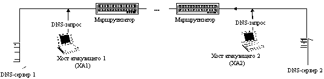
Рис. 4.6.1.1. Фаза ожидания
атакующим DNS-запроса от DNS-сервера
(для ускорения атакующий генерирует необходимый DNS-запрос).
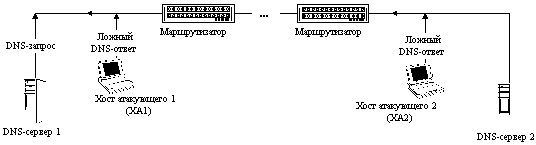
Рис. 4.6.1.2. Фаза передачи атакующим
ложного DNS-ответа на DNS-сервер 1.
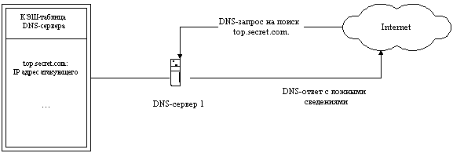
Рис. 4.6.2. Внедрение в Internet ложного сервера
путем создания направленного "шторма" ложных DNS-ответов
на атакуемый DNS-сервер.
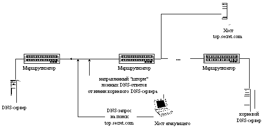
Рис. 4.6.2.1. Атакующий создает направленный "шторм" ложных
DNS-ответов от имени одного из корневых
DNS-серверов и при этом провоцирует
атакуемый DNS-сервер, посылая DNS-запрос.
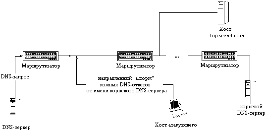
Рис. 4.6.2.2. DNS-сервер передает DNS-запрос на корневой DNS-сервер
и немедленно получает ложный DNS-ответ от атакующего.
В завершение хотелось бы снова вернуться к
службе DNS и сказать, что, как следует из
предыдущих пунктов, использование в сети Internet
службы удаленного поиска DNS позволяет атакующему
организовать в Internet удаленную атаку на любой
хост, пользующийся услугами данной службы, и
может пробить серьезную брешь в безопасности
этой и так отнюдь не безопасной глобальной сети.
Напомню, что, как указывал S. M. Bellovin
в ставшей почти классической работе [14]: "A combined
attack on the domain system and the routing mechanisms can be catastrophic"("Комбинация
атаки на доменную систему и механизмы
маршрутизации может привести к катастрофе" ).
|